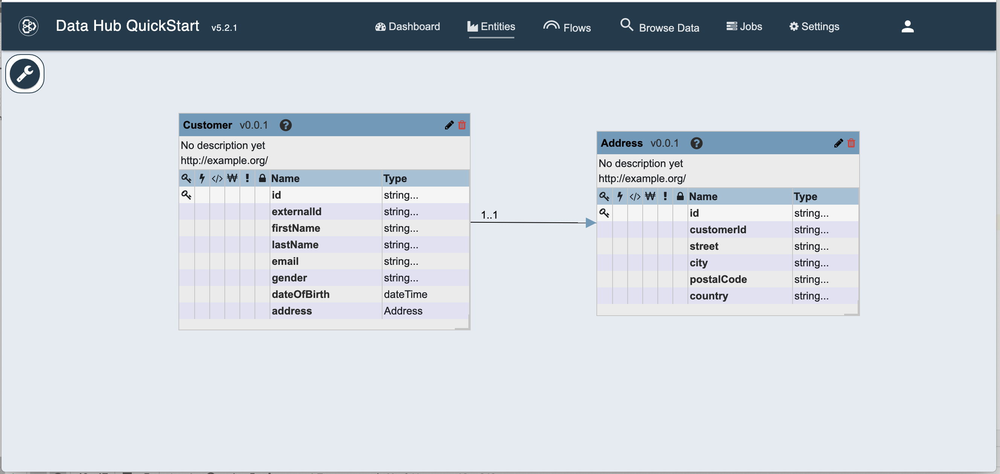
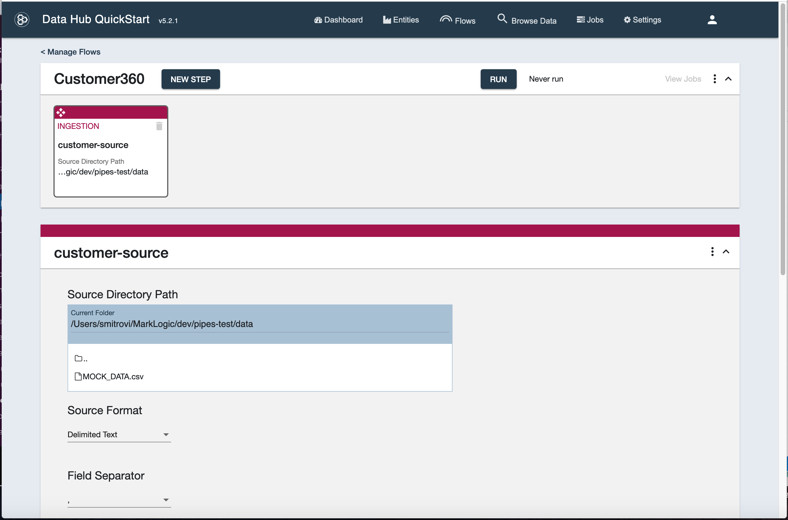
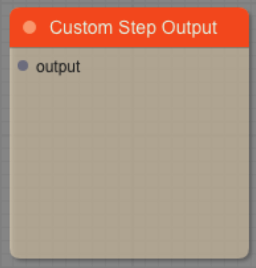
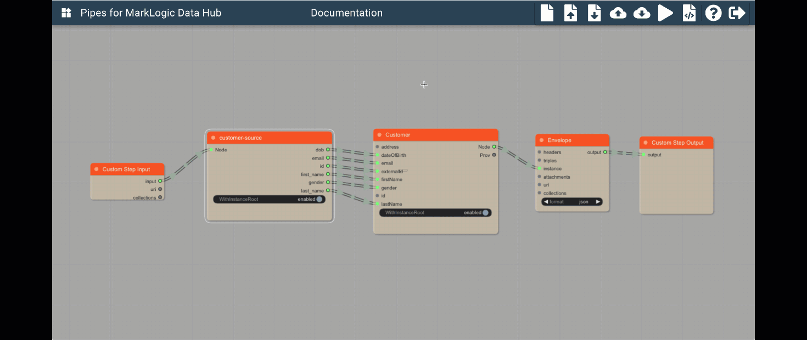

How Do I Use It?
Define the entities model in DHF
Pipes creates custom step code for your MarkLogic DataHub flows.
Let’s create a custom code which will read in sample customer records and produce instances of Customer and Address entities, based on this data.
As a basis, we’ll use a sample DHF project defined in Examples/Customer360.
If we deploy this project on a MarkLogic server and run DHF QS UI, we’ll see the definition of Customer and Address entities, like below:

The Customer360 project already comes with pre-defined flow and steps so you can skip ahed to Ingest Data
Create the flow
Now that we have the data model defined, let’s create a flow to ingest data and transform it using a custom step created with Pipes.
In the DHF QuickStart, click on the Flows tab and then on the “NEW FLOW†button. Create a flow called Customer360. You should see this:

Add ingest and custom steps
Now click on the flow name (Customer360) to go into the flow definition. It will be empty and look like this:

Now, let’s add an Ingest step. Click on “NEW STEP†and define the step as shown in the picture below:

When you clean on “SAVE”, you should see this:

Configure the Source Directory Path to the folder that contains the MOCK_DATA.csv file. Set “Delimited Text†as Source Format, Field Separator is “,†and Target Format should be “JSON”.
Let’s add a custom step now. As before, click on “NEW STEP†and define a Custom (type: Other) step.
Let’s name it “customer-address-custom”, and select “Customer-Source†as the Source Collection. Select “Customer†or “Address†as the Target Entity:

Click on save and you will see:

Ingest data
Click on the “RUN”, deselect the “customer-address-custom†checkbox and click the “RUN†button.

Once the ingest finishes, click on the “Browse Data†tab to check that the data has been ingested as expected. You should see 1000 documents in the “customer-source†collection:

Congratulations, you’ve ingested data into MarkLogic. Now, let’s transform it with Pipes.
Build a graph in Pipes for the custom step using ingested data
Log in
Assuming that Pipes is running on localhost and port 9085, open http://localhost:9085 in your browser and log into Pipes:

Enter the username and password of one of the DHF users (such as flow-developer or flow-operator) and, after logging in, you should see:

The biggest part of the UI is taken by the canvas. On the canvas we can see 2 blocks. Any Pipes graph we build must contain these blocks.
Custom Step Input block:

This block represents the input to the custom step we’re designing here. As the input into the custom step, we specified collection “Customer-Source†as we were defining the custom step in the DHF QuickStart. The Custom Step Input block has 3 nodes on the right side. That means it provides 3 different things:
-
input: Provides the content of the document(s) in the “Customer-Source†collection. That’s the content we will be transforming in the graph into our data model entities.
-
uri: provides the URI of the incoming document. This can be useful for storing provenance information, for instance.
-
collections: provides the collections of the incoming document as an array. This, too, is a useful provenance information that can be passed down into the final data model.
Custom Step Output block

This block represents the content that will be generated by the custom step. Everything we feed into it’s output node will be outputed by the custom step.
The minimal graph and running the graph preview
Let’s connect these 2 blocks: click and hold the left mouse button on the input node of the Custom Step Input block, move it to the output node of the Custom Step Output block and release the mouse button there.
Great job. As we build our graph, we can always preview its output. We do that by doing following:
- In the top bar menu, click on the “Play†button
- The “Preview Graph Execution†wizard will open
- The wizard requires to know which database and collection to use as a source. Since we’ve already defined our Custom Step in the QuickStart UI, we can select the “Custom DHF Step†option and click on “Continue”
- In the drop-down, we’ll select the our custom step “customer-address-custom†(we defined it earlier 👆)
- We’ll also check the “Random document†checkbox. This will allow us to execute the preview multiple times, each time using another document as the source
- Click “Continue”
- On the “Save result to Database?†question, we’ll leave the checkbox unchecked and click “Continue”
Now, we’ll see a summary of our selection:
The source database and collection have been determined based on the information in the custom step.
Click on “Execute Preview†and scroll down to check the results. Notice that the graph produced the input document at its output. This is because we didn’t define any transformation yet but simply connected the input with the output.
Click again on “Execute Preview”, scroll down to check the result and notice that another source document was used. This is the result of the “Random Document†checkbox. If we uncheck that, we’ll be getting the same source document each time we click on “Execute Preview”. This can be useful when we’re developing the graph and want to understand how the output has changed since the last time we ran the preview.
Here’s the summary of our actions in an animated GIF:

Envelope block
To add en Evelope block:
- Hover over an empty place on the canvas and right-click
- Now, left-click on the “Add Node”
- Left-click on the “DHF†group and another sub-group will open
- Left-click on “Evelope.
- The Envelope block will appear on the canvas
When creating data hub with MarkLogic using the Data Hub Framework, we use the envelope data pattern to group data and meta-data together. The Enevelope block in Pipes enforces this pattern.
As we build our graph, we will be directing our data into the Envelope nodes.
Let’s connect the Evenlope into the graph.
- Click the output node of the Custom Step Output block to lose the connection
- Connect the output node of the Envelope to the output node of the Custom Step Output
- Connect the input node of the Custom Step Input to the instance node of the Envelope
That’s it, we’re now producing an envelope at the output of our custom step. Run the preview to see how the output has changed.

Entity block
The data model is defined by the entities and their relationships we created in the QuickStart UI. An Entity block represents the DHF Entities in Pipes. Let’s create it:
- In the upper-left corner, click on the “Setting and Block Creation button”
- Click on the “ENTITY BLOCKS†tab
- In the drop-down, select “Customer”
- The properties of the Customer Entity, as defined in QuickStart UI, will be shown
- Click on “CREATE ENTITY BLOCK”
- Do the same for the Address entity by selecting it in the drop-down and clicking on the “CREATE ENTITY BLOCK†button

Let’s add Entity blocks to our graph.
- Hover over an empty place on the canvas and right-click
- Now, left-click on the “Add Node”
- Letf-click on “Entities†(all the way at the bottom)
- Select Customer
- Connect the Customer Node with the Envelope Instance
Source block
We nwanted to map some source data into our Entity block. We’ll do that by creating a Source block. Source blocks capture parts of the data and we will use it as input for the Customer block.
- In the upper-left corner, click on the “Setting and Block Creation button”
- Click on the “SOURCE BLOCKS†tab
- Click on the “START NEW BLOCK†button
- Enter a name for the block: “customer-source”
- (Optionally, add a description)
- Click “NEXT”
- From the drop-down, select the name of the custom step we created earlier: “customer-address-custom”
- Click “NEXT”
- Click on the gray triangle next to “Document Fields”
- Repeat the same for “envelope†and “instance”
- Notice that you’ve partially expanded the document tree now
- Check the boxes next to values we want to capture from the source: “dob”, “email”, “first_name”, “gender”, “id†and “last_name”
- Click “NEXT”
- You’ll see a block preview, on the left there should be Node and on the right there should be the field names we’ve selected in the previous step
- Finally, click the “CREATE SOURCE BLOCK”
Here’s the summary of our actions in an animated GIF:
Map values
Let’s add the source block we’ve just created to the graph and connect it.
- Hover over an empty place on the canvas and right-click
- Now, left-click on the “Add Node”
- Click on “Sources†(at the bottom)
- Click on “customer-source”, the block that we just defined
- Connect the nodes between customer-source and Customer in the following way
-
- dob -> dateOfBirth
-
- email -> email
-
- id -> externalId
-
- first_name -> firstName
-
- gender -> gender
-
- last_name -> last_name
- Finally, connect the Custom Step Input input to customer-source node
Here’s the summary of our actions in an animated GIF:
Let’s run the preview and see what our graph will output.

Add the address entity and map values
- Add the Address Entity block to the canvas
- Create the “address-source†source block, similar to how you created the “customer-source†source block
- Add the address-source to the canvas
- Map the values between address-source and Address block. The customerId should be mapped from customer_source id node.
- Connect Custom Step Input Input with address-source Node
- On the Address block uncheck/disable the WithInstanceRoot toggle
- Connect Address Node to Customer address
Here’s the summary of our actions in an animated GIF:

Now, let’s run the preview and have a look at the result.

Create custom URIs
The Envelope block contains an URI node. However, if that node remains unmapped, the resulting document will have the same URI as the source document. In many situations, we’d like to be able to change the URI.
- Add a “Unique ID†block to the canvas (Generate->Unique ID), below the Customer block
- Click on the field with the prefix and clear the content
- Add a “String Template†block to the canvas (Generate->String Template)
- Connect Unique ID uuid with String Template v1
- On the String Template, click on the template field and define the template as “/customer/${v1}.json”
- Connect String Template newString to the Envelope uri
- Connect Connect Unique ID uuid to the Customer id to re-use the same uuid for the Customer id
- Run the preview to see how the URI of the resulting document changed but also the “id†property in the Customer instance
Now, let’s run the preview and have a look at the result. Observe the new URI and the Customer’s id.

Create multiple Entity instances (1 to many mapping)
Sometimes, we want to create a more normalized model of the data. For instance, the address is a business domain entity that can be independent from the customer’s personal details and have a separate life cycle.
Let’s see how we use Pipes to create multiple Entity instances.
- Add another Envelope block to the canvas
- Enable the WithInstanceRoot toggle on the Address
- Connect Address Node to new Envelope’s instance
- Add a “Generate Array†block to the canvas (Join->Generate Array)
- Connect both Envelopes to this block: Customer Envelope to item1 and Address Envelope to item2
- Connect Generate Array array to Custom Step Output output
- Create a unique URI for the Address Envelope
- Optionally, map the Custom Step Input uri to both Envelope’s uri, this will add provenance information (the originating uri) to the resulting documents
- Run the preview and observe that the graph is now producing an array of 2 json documents - a document per Entity from our data model

Export the custom step code from Pipes into the DHF project
With Pipes, we have defined our custom transformation and now we’d like to run it as a custom step in a DHF flow. To export the code to our previously created custom step, do following:
- In the top bar, click the “Export DHF custom step module†button:
- In the dialogue:
-
- Check “Save to project code†- this will will save the main.sjs into your local DHF project
-
- (optionally) Uncheck the “Download main.sjs file†if you don’t want the file to be additionally downloaded into the download folder your browser is pointing to
-
- Check “Deploy to MarkLogic†(this will push the module to your MODULES database)
-
- From the drop-down, select the name of the custom step we’re exporting the code for: “customer-address-custom”
-
- Click “Export”
- If successful, you’ll see a message in a green bar poping-up near the top of the canvas
Run the custom step
Once the custom code has been exported from Pipes, you can go back to QuickStart UI and run that step in the Customer360 flow:
As a result, we’ll now see 1000 documents with the customer information and 1000 documents with address information.